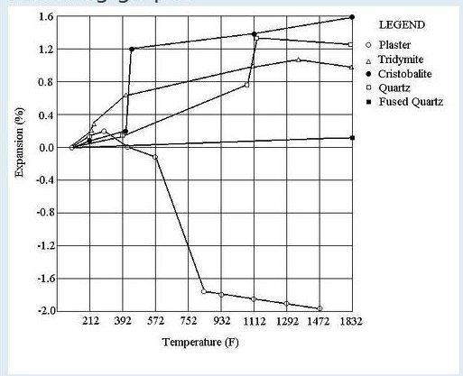
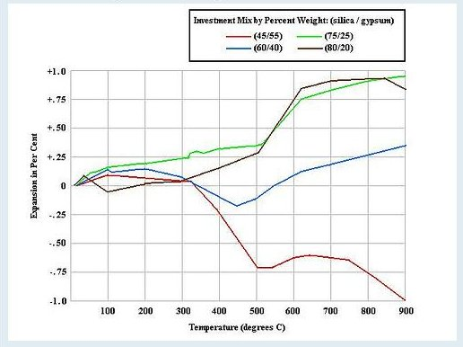

Kipsiseosmuotit 1. Materiaalit
Kipsimateriaali
Kipsiä valmistetaan kahdella eri tekniikalla: Alfa-kipsi valmistetaan kuumentamalla
kalkkikiven lohkareita painehöyryssä.
Beta-kipsi polttamalla kalkkikiven jauhetta ilmakehän paineessa.
Nämä ovat kiderakenteeltaan ja ominaisuuksiltaan erilaisia.
Useimmat kaupalliset kipsit ovat näiden sekoituksia.
Beta-kipsi on hyvin plastista, muodostuu karkeammista osasista.
Alfa-kipsi muodostuu hienommista neulasmaisista kiteistä ja kovettuu lujemmaksi
ja laajenee vähemmän asettuessaa. Betakipsiä on mm rakennuskipsi ja "Potter's plaster". Alfapitoisempaa kipsiä myydään usein mallikipsin
nimellä. Mm. Supradur on hyvin alfapitoinen kipsi.
Hammasteknikoiden kipsi on varsin puhdasta alfakipsiä.
KIpsi kovettuu kun siihen lisätään vettä.
Tämä vesi sitoutuu kipsin kiderakenteeseen kidevedeksi.
Siksi kipsivelli sakenee vähitellen. Se on lämpöä muodostava reaktio.
Kipsi kuumenee kovettuessaan. Tämä on muistettava jos ottaa valoksia ihosta.
Kipsiseos voi tulla polttavan kuumaksi juuri kun se on niin kovettunut että kättä ei saa irti. Lopullisen kovuutensa kipsi saa muutamassa tunnissa. Kovettumisvaiheessa kipsi
laajenee hieman.
Kun kipsiä kuumennetaan enemmän, kidevesi poistuu ja kipsi haurastuu. Tämä prosessi on päättynyt noin 300 - 400 C lämmössä.
Samalla kun kidevesi poistuu muuttuu myös kipsin kiderakenne. Siitä tulee pysyvästi veteen liukenematonta.
Kideveden poistuminen sitoo paljon lämpöä. Riippumatta uunin lämpötilasta muotti pysyy
suhteellisen haaleana. Olen rikkonut parikin kertaa päälle slumpattavan lasin, kun sen reunat
ovat kuumenneet uunin mukana ja keskusta on viileämän kipsin päällä.
Yleinen harhakäsitys on että nopeassa kuumennuksessa höyryn paine rikkoo kipsin.
Oikeampi syyn on että lämpö tulee kipsiin pinnalta sisäänpäin. Liian nopeassa lämmityksessä
ydin on vielä "märkä" ja kuivunut pinta kutistuu n 2% ja aiheuttaa pinnan suuntaisia halkeamia
kipsiin.
Lisäaine
Tuota kutistumista voidaan vastustaa lisäämällä kipsiin aineita jotka laajenevat vastaavasti.
perinteisin on kvartsihiekka. Sen pöly on kuitenkin terveydelle vaarallista. Sitä ei pitäisi
käsitellä kuivana ja on muistettava hengityssuojan käyttö.
On muita parempia piioksidipohjaisia aineita, kuten kaoliini, molokiitti ja poltettu savi.
Niiden laajeneminen on vähäisempää kuin kipsin kutistuminen.
Siksi lisäaineen ja kipsin suhde
on suunnilleen 2:1 painosta. Kipsiseos kannattaa aina valmistaa punnitsemalla.
Tärkeätä on sekottaa ainekset todella huolella jotta tulos on tasa-aineinen.
 Kuva 1
Kuvan lämpötilat on fahrenheit asteina.
212 F =100 C
932 F = 500 C
1472 F = 800 C
Lämmitysvaiheessa pitää varoa muotin halkeilemista koko ajan, jäähdytyksessä
on ratkaisevaa aika jonka lasi juoksevaa eli 800 C-500 C.
Lisäaineen ja kipsin seossuhteesta on tehty paljon kokeita ja jokaisella tuntuu olevan omat
reseptinsä.
 Kuva 2 lisäaineen suhteita
Tasapainoisin kuvassa on 60/40 suhde. Se on kvartsihiekan kanssa. Esim kaoliini sisältää
myös alumiinioksidia ja sen kanssa korkeampi lisäainemäärä olisi parempi.
Kaoliinin lämpölaajeneminen on suurempi kuin lasin, siksi se ei ulkopuolisenn muotin aineena
aiheuta puristusta. Jos halutaan valaa malja, tarvitaan usein myös sisäpuolinen muotti.
Se pitäisi kutistua jäähtyessään enemmän kuin lasi.
Mahdollisia lisäaineita on muitakin.
Alumiinioksi ja kaoliini ovat erotusaineesta tuttuja ainesosia jotka eivät tartu lasiin.
Lasilla on pieni pintajännitys aluminioksidia vastaan. Lasi "kastelee "sen ja siksi kopioi
pinnan tarkasti.
Kaoliinilla on suurempi pintajännitys ja lasin pinta jää sileämmäksi ja kirkkaammaksi.
Molokiitti (=poltettu kaoliini) käyttäytyy samoin.
Luto eli kertaalleen poltettu muottimassa on jauhettuna hyvä lisäaine.
Sitä voi käyttää jopa kolmanneksen lisäaineen määrästä.
Luto saadaan ensin murskaamalla vasaralla pieniksi paloiksi ja sitten jauhamalla
vanhanaikaisella käsinveivattavalla lihamyllyllä. Luto kannatta seuloa muutamaan karkeuteen.
metalliverkkoinen keittiön siivilä on aika hyvä seula hienoimmalle ainekselle.
Vermikuliitti on vähemmän käytetty lisäaine joka antaa huomattavasti lujuutta
kipsiseokselle. Tarkkaa reseptiä ei ole "muutama kourallinen". Sitä ei pidä käyttää
mutin pintakerroksessa. Se vaatii erotusaineen.
Midgley
Lisäaineen hiukkaskoolla on merkitystä.
Jos se koostuu erikokoisista rakeista, se pakkanntuu tiiviimmin.
Lisäaineet, varsinkin luto, nopeuttavat kipsin jämähtämistä.
Lujitteet
Kipsin puristuslujuus on riittävä, halkeamat syntyvät heikosta vetolujuudesta.
Vetolujuutta voi parantaa lujitteilla. Kanthal-lanja muotin ympäri estää jo
halkeavia paloja liikkumasta paikoiltaan, katiskaverkkoa olen käyttänyt samaan tarkoitukseen.
Se pannann niin, että se jää muottiseoksen siisään. Pelkästään ulkopuolisena se
hapettuu ja haurastuu pois.
Teoriassa lasikuitukin sulaa fuusaus- ja valu-lämmössä mutta käytännössä se on osoittautunut
hyvin timivaksi lujitteeksi. Sen kanssa voi tehdä hyvinkin ohuita muottikuoria.
Lasikuitu on hyvä ja paljon käytetty lujite. Pätkittyä lsikuitua, joka on tarkoitettu
muovien ruiskuvaluun, voi sekoittaa muottimassaan. Paremman tuloksen saa jos
lasikuitukankaan paloja imeyttää kipsivellillä ja painelee tilkut muottiin kiinni.
Kipsi ja vesi
Kipsi kovetetaan lisäämällä vesi.
Veden osuudella voidaan vaikuttaa muotin ominaisuuksiin.
Kovettuakseen kipsi tarvitsisi vain 19% painostaan vettä.
Tämä seos on kuitenkin niin sakea että siitä on vaikea
tehdä muottia. Kun vettä on enemmän. se kaikki ei reagoi kipsin kanssa vaan jää
massan sekaan muodostaen huokosia. Huokoisuus on muottimassalle etu.
Liian suuri vesimäärä kuitenkin lisää muotin haurautta.
Veden sitoutuminen kipsiin synnyttää lämpöä. Vastaavasti kun kuumennettaessa vesi posituu kipsistä,
reaktio sitoo lämpöä ja pitää kipsiseoksen suhteellisen viileänä uunin ilman lämmöstä riippumatta.
Kun kaikki vesi on poistunut kipsi en menettänyt lujuutensa ja muotti pysyy koossa vain
aineksen pakkautumisen varassa.
Tuo muotin viileänä pysyminen aiheutti minulle aluksi paljon ongelmia.
Ensiksi useita kalliita uunilevyjä halkesi. Laakea kipsiseosmuotti piti
levyn keskialueen viileänä ja kun reunat laajenivat lämmöstä, halkesi uunilevy.
Sama lämpöero näkyi myös päälle slumppauksessa. lasi joka oli muotin päällä
lämpeni, mutta keskikohdan alla oli viileänä pysyvä muottiaines. Lasi halkeski
tuossa 200-300 asteen välillä.
Uuni on lämmitettävä todella hitaasti kunnes kaikki kidevesi on poistunut.
Liian nopea lämmitys näkyy muotin pinnan suuntaisina halkeamina. Pinta on
kutistunut ennen ydintä.
Lisäys 10-06-12
Taas kerran rikoin uunilevyn kipsimuotilla.
Olin poistanut siitä vedn, uunissa 8 tuntia 80 C lämmössä.
jatkokäsittelin laattaa muutaman sateisen päivän.
Se imi uutta kosteutta, ja v"varovainen" kuumennus ->550 C 3
tuntia ei riittänyt tuuman paksuisen laatan kuivaamiseen.
kosteutta sisältävä laatta luovuttaa kaiken lämmön vesihöyrylle ja pysyy sta-asteisena.
Uunilevy ehti kuumeta reunoilta liikaa ja halkesi.
Muita aiheeseen liittyviä sivuja: